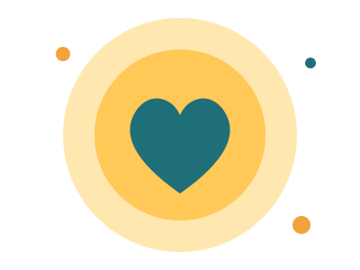

נותנים מעצמנו – ומאירים לאחרים
Give&Shine הוא ארגון התנדבות שמחבר בין אנשים שרוצים לתת לבין מי שצריך עזרה. שעה אחת בשבוע שלך יכולה לשנות למישהו את כל השבוע.

חלוקת מזון, שיפוץ בתים ונטיעות.
ביקורי בית, שיעורי עזר ומשלוחי מתנות.